Three synthetic controls, one policy, and the interval that was 33 times too narrow
Nagoya University (GSID)
August 4, 2026
Act I
California’s Proposition 99, 1988. A 25-cent cigarette tax. The canonical synthetic control study.
One. The donor weights must be non-negative and sum to one — the simplex.
Two. No donor state absorbed any part of the treatment — SUTVA.
Neither is a fact about the world. Both are modelling choices, and both are testable.
This deck tests both. The effect survives. Neither assumption does.
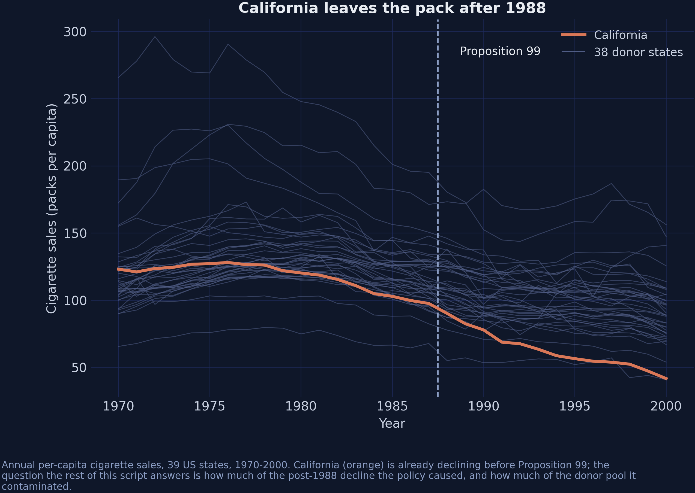
39 states · 1,209 rows · 18 pre-treatment years · 38 donors
Oregon and Arizona border California too — but both ran their own tobacco programmes, so neither is in the donor pool.
Eleven states are excluded altogether: AK, AZ, FL, HI, MD, MA, MI, NJ, NY, OR, WA.
The result: exactly one leak channel, and we can name it.
spatial_w has one non-zero entry. That is the whole spatial story, and it is why \(\rho\) is hard to pin down.
\[\widehat{\alpha} = \arg\min_{\alpha \in \Delta} \sum_{t \le T_0}\Big(Y_{1t} - \alpha^{\top}\mathbf{Y}^{c}_{t}\Big)^2, \qquad \Delta = \Big\{\alpha : \alpha_j \ge 0,\ \textstyle\sum_j \alpha_j = 1\Big\}\]
\[\text{SUTVA:} \qquad Y_{jt}(\mathbf{D}) = Y_{jt}(D_j) \quad \text{for every donor } j\]
Relax the first and the donor pool changes. Relax the second and the counterfactual changes.
mlsynth — 46 synthetic-control estimators behind one config dictionary.
scspill — the Bayesian spatial spillover model of Sakaguchi & Tagawa (2026), which returns two estimands.
Both are young. Both are pinned — one to a release, one to a commit.
Act II
Stage 1 — hard constraint: \(\qquad \alpha \in \Delta\)
Stage 2 — soft prior: \(\qquad \alpha_j \mid \lambda_j \sim \mathcal{N}(0, \lambda_j^2), \quad \lambda_j \mid \tau \sim \mathcal{C}^{+}(0,\tau)\)
Stage 3 — same \(\alpha\), but the donors are no longer clean:
\[\mathbf{Y}^{c}_{t} = \rho\big(\mathbf{w}\,Y_{1t} + W\mathbf{Y}^{c}_{t}\big) + X_t\beta + \mathbf{u}_t\]
One regression, three stages. Each drops exactly one restriction.
| ATT | −18.43 |
| pre-treatment RMSE | 1.60 |
| active donors | 5 of 38 |
| top-4 share of weight | 98.6% |
Utah 0.343 · Montana 0.254 · Nevada 0.242 · Connecticut 0.146
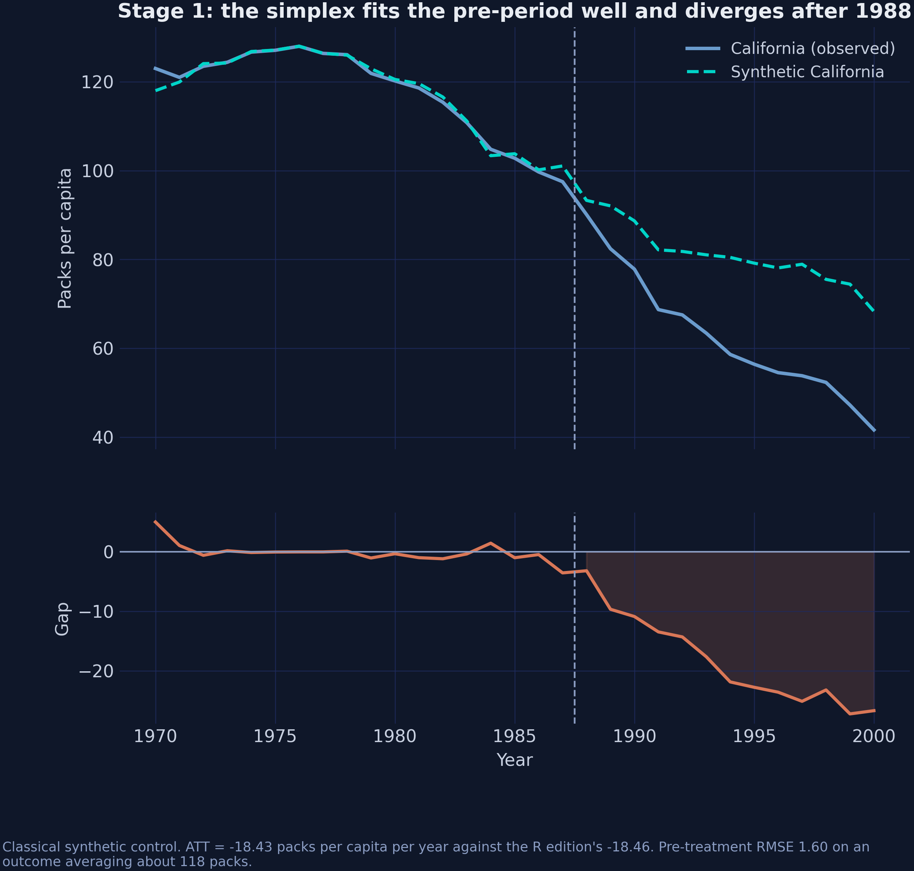
Reproduces the R edition’s −18.46 to within 0.04 packs, from a different package and a different optimiser.
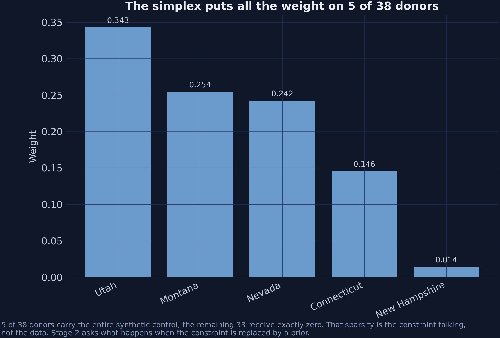
Is that sparsity in the data, or sparsity in the constraint? From the outside they look identical.
\[\alpha_j \mid \lambda_j \sim \mathcal{N}\big(0, \lambda_j^2\big), \qquad \lambda_j \mid \tau \sim \mathcal{C}^{+}(0, \tau), \qquad \tau \sim \mathcal{C}^{+}(0, \sigma)\]
Infinite spike at zero. Cauchy tails. Most \(\lambda_j\) come out tiny; any single one can escape.
Sampling is closed-form via the Makalic–Schmidt inverse-gamma representation — an exact reparameterisation, not an approximation.
That is why both libraries run hundreds of thousands of iterations in seconds rather than hours.
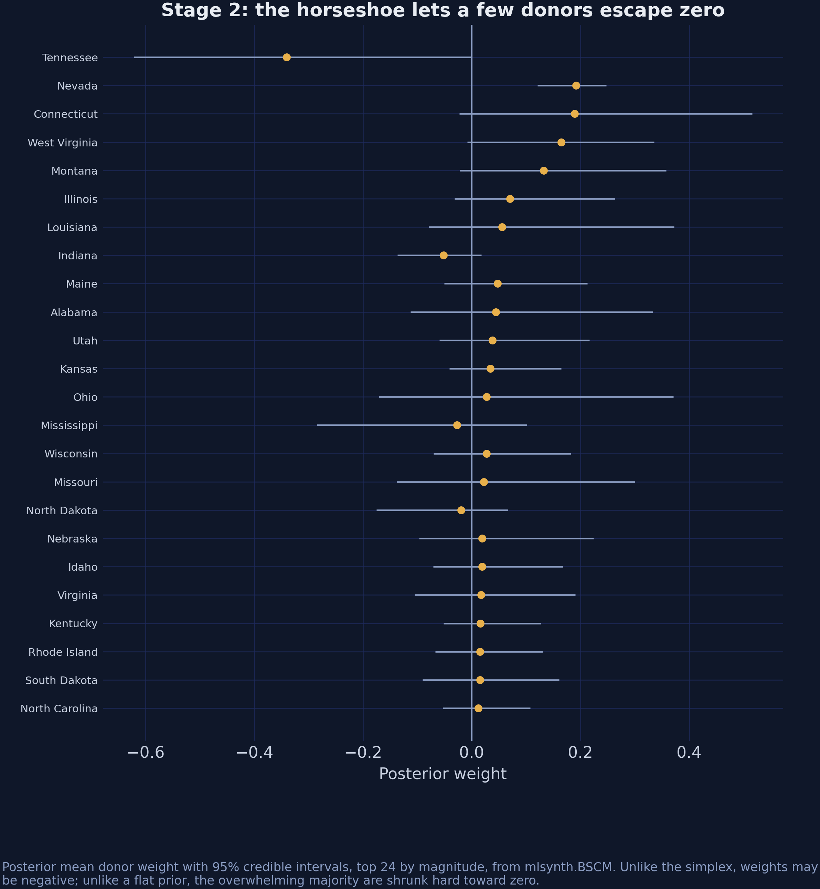
5 → 26 active donors. Almost every credible interval straddles zero.
| Estimator | ATT | Intercept | Weights sum |
|---|---|---|---|
mlsynth.BSCM |
−18.85 | 16.86 | 0.758 |
scspill at \(\rho = 0\) |
−15.68 | 0 | 0.885 |
| R edition, Stage 2 | −15.84 | 0 | — |
\[\text{BSCM:}\ \ Y_{1t} = \beta_0 + \sum_j \alpha_j Y_{jt} + \varepsilon_t \qquad \text{scspill:}\ \ Y_{1t} = \sum_j \alpha_j Y_{jt} + \varepsilon_t\]
When two packages disagree about a model they both implement, check the equation before you check the sampler.
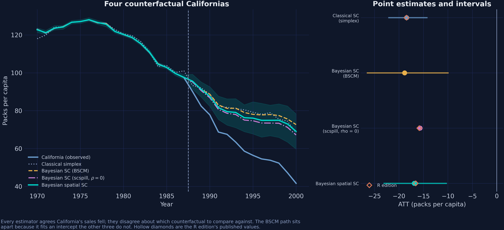
Hollow diamonds are the R edition’s published values.
\[Y_{1t} - \sum_j \alpha_j Y_{jt} \;=\; \underbrace{\xi_{0t}}_{\text{what we want}} \;-\; \underbrace{\sum_j \alpha_j \xi^{c}_{jt}}_{\text{what we get for free}}\]
The bias is a product of two things: how much weight a donor carries, and how contaminated it is.
A filthy donor with zero weight is harmless. A slightly dirty one carrying half the counterfactual is not.
\[\exists\, \alpha \in \mathbb{R}^{N} \;:\; Y_{1t}(\mathbf{0}) = \sum_j \alpha_j Y_{jt}(\mathbf{0}) \quad \forall t\]
With \(A = W + \mathbf{w}\alpha^{\top}\), the donors’ untreated path solves in closed form:
\[\mathbf{Y}^{c}_{t}(\mathbf{0}) = \big(I - \rho A\big)^{-1}\Big[\big(I - \rho W\big)\mathbf{Y}^{c}_{t} - \rho\,\mathbf{w}\,Y_{1t}\Big]\]
\[\xi_{0t} = Y_{1t} - \alpha^{\top}\mathbf{Y}^{c}_{t}(\mathbf{0}), \qquad \boldsymbol{\xi}^{c}_{t} = \mathbf{Y}^{c}_{t} - \mathbf{Y}^{c}_{t}(\mathbf{0})\]
No \(\beta\). No factors. No error variances. They cancel.
The effects depend on \((\alpha, \rho, \mathbf{w}, W)\) and the observed data. Nothing else.
A model this rich has many weakly identified parameters. If the effects depended on all of them, that weakness would poison everything.
Instead it is confined to one scalar — \(\rho\) — where we can see it, measure it, and report it.
Weak identification you can locate is a manageable problem. Weak identification spread across a nuisance block is not.
Stage 2 comes out of the Stage-3 fit at no extra cost. The model is nested.
0.316
\(\hat\rho\), 95% CrI [0.231, 0.403] — the interval excludes zero, so the data reject the restriction that would collapse Stage 3 back to Stage 2
| Parameter | ESS (from 250,000 draws) |
|---|---|
| \(\sigma^2\) | 204,095 |
| \(\alpha\) (donor weights) | 10,000 – 26,000 |
| \(\rho\) | 137 |
One contiguity channel out of California means the panel holds one state’s worth of evidence about how strongly policies leak across borders.
That is a property of the question, not a defect in the software.
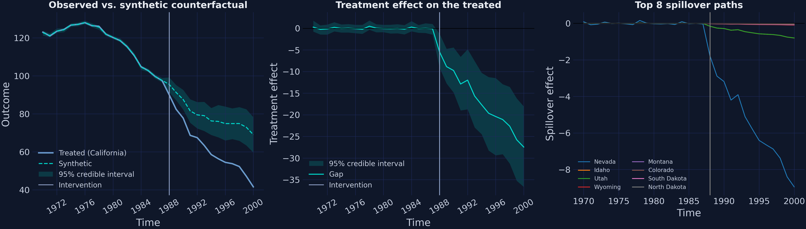
result.plot(kind="panel") — observed vs counterfactual, the effect path, and the eight largest spillovers.
Linear colour scale. The concentration is the finding, not a rendering artefact.
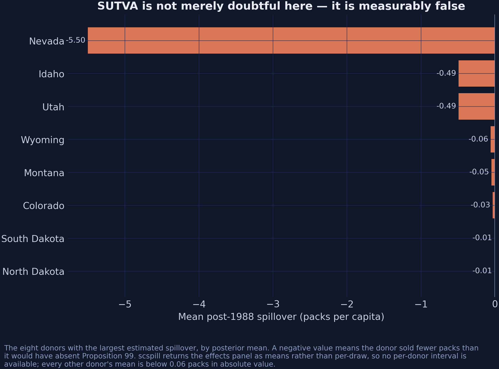
Nevada −5.50 · Idaho −0.49 · Utah −0.49 · everything else is noise.
−5.50
Nevada’s sales came in below its no-treatment path. Not cheap cigarettes crossing the border — the anti-smoking campaign crossing the same border.
| Donor | \(\alpha_j\) | \(\xi^{c}_j\) | \(\alpha_j \xi^{c}_j\) |
|---|---|---|---|
| Nevada | 0.200 | −5.50 | −1.098 |
| Utah | — | −0.49 | −0.018 |
| Idaho | — | −0.49 | −0.006 |
| Sum (all 38 donors) | −1.130 |
Purged minus contaminated: −1.186. The identity holds.
Negative spillovers on positively-weighted donors push the estimate toward zero. Modelling the leak makes the effect larger.
Act III
| ATT | 95% CrI | Width | |
|---|---|---|---|
| R edition (published) | −16.59 | [−16.78, −16.39] | 0.384 |
| This post, corrected | −16.87 | [−23.05, −10.33] | 12.713 |
A factor of 33. “Different language” does not explain that.
scspill documents six departures from the authors’ R code. Three have escape hatches — so put the Python back into the R specification and look.
| Quantity | R edition | scspill, R spec | Difference |
|---|---|---|---|
| ATT | −16.590 | −16.286 | 0.304 |
| \(\hat\rho\) | 0.2226 | 0.2282 | 0.0056 |
| ESS(\(\rho\)) | 2.93 | 3.27 | 0.34 |
| Nevada spillover | −3.750 | −3.778 | 0.028 |
Independent code, different language, reproducing \(\hat\rho\) to within 0.006 — including an effective sample size of 3.
| Specification | Iterations | Width | ESS(\(\rho\)) |
|---|---|---|---|
| scspill, R spec | 5,000 | 0.482 | 3.3 |
| scspill, R spec | 500,000 | 0.702 | 66.9 |
| scspill, corrected | 500,000 | 12.713 | 136.8 |
A hundred times the iterations widens the interval by 45%. Propagating \(\alpha\) widens it by 1,700%.
Two different failures, and they need to be told apart.
Effective sample size asks whether the interval is reliable — did the chain visit enough of the posterior for its quantiles to mean anything? At ESS 3, no.
propagate_alpha asks whether the interval is complete — does it account for everything the model is uncertain about? With \(\alpha\) pinned at its posterior mean, no.
The published interval failed both.
Report the effective sample size beside every credible interval, or the interval is decoration.
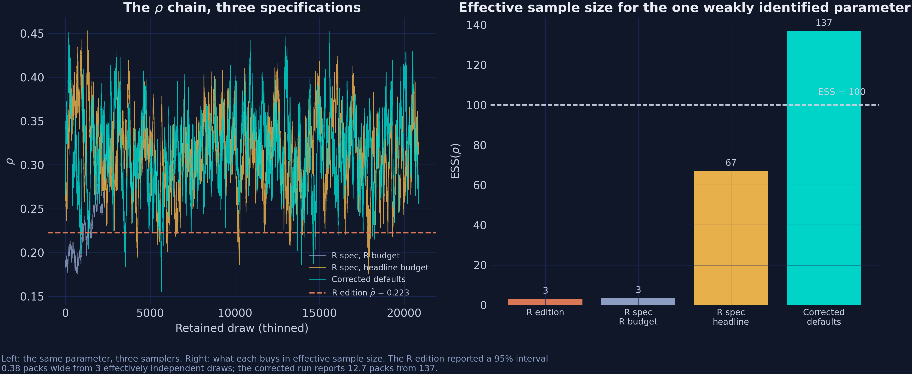
Adaptation lands acceptance at 0.444 against a 0.44 target, and ESS at 137.
Departure 1: the covariate array was indexed as \((N, T, K)\) when it was laid out as \((T, N, K)\).
Nothing crashes. Nothing looks wrong. Each state’s price is silently matched to another state’s sales.
With covariates entering correctly, \(\hat\rho\) moves from about 0.19 to about 0.35 on the same data.
The most dangerous bugs are the ones that return plausible numbers.
Draw parameters from the prior, simulate data → the marginal-conditional joint distribution.
Simulate data, then run one Gibbs sweep, repeatedly → the successive-conditional joint distribution.
If every conditional is correct, these are the same distribution. Any statistic’s mean must agree.
That is how an \(\omega_k\) conditional treating a variance as a precision came to light.
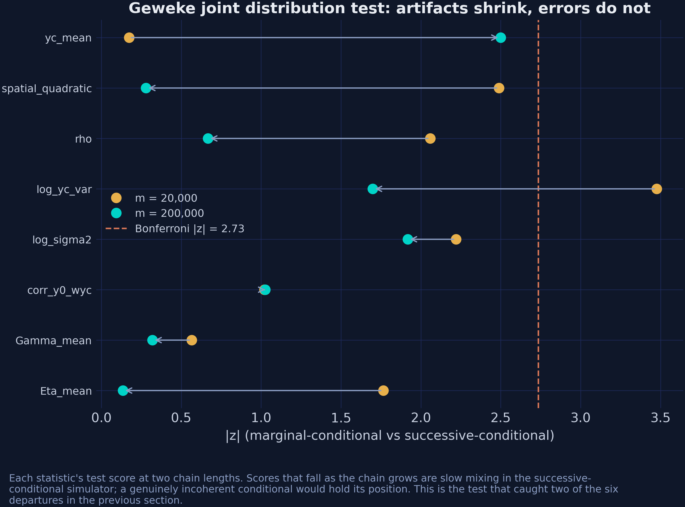
max \(|z|\) falls 3.48 → 2.50 and rejections go 1 → 0 as the chain grows tenfold. That is slow mixing, not an incoherent conditional.
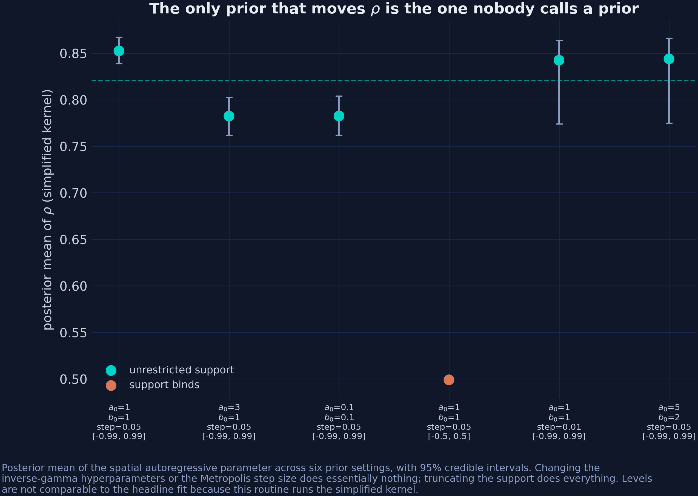
Sweeping \(a_0\), \(b_0\) and the step size moves \(\rho\) by 0.07. Truncating the support moves it by 0.32.
Objection. The SAR layer does not make anything causal that was not causal before. You supplied the graph; a different graph gives different spillovers.
Response. Correct, and the post says so. But the alternative is not “no assumption” — it is \(\rho = 0\), imposed silently and never reported. Making the assumption a parameter is what lets the data reject it.
The choice is not between assuming and not assuming. It is between an assumption you can test and one you cannot.
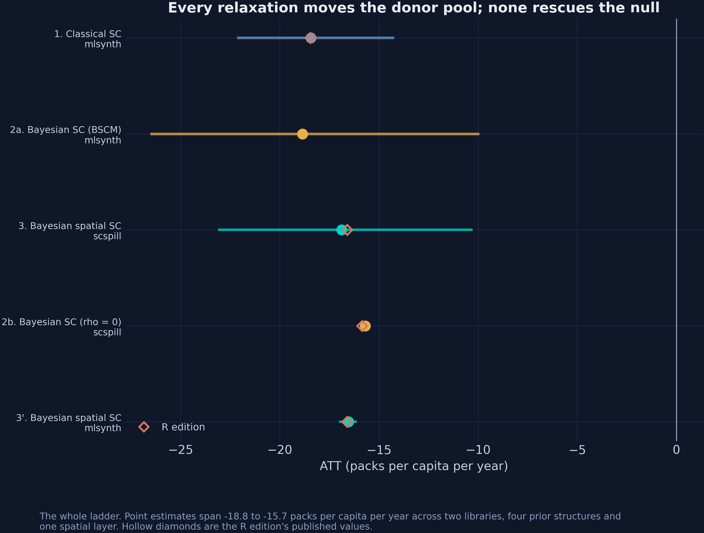
Two libraries, four prior structures, one spatial layer, one independent third implementation.
−16.87
packs per capita per year for California — and −5.50 for a state that never voted on it
.venv